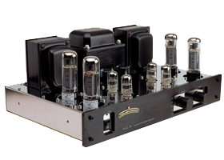

W prasowej i internetowej literaturze poświęconej podziałowi budżetu na zakup sprzętu hi-fi wielu autorów pokusiło się o sformułowanie prostych reguł zalecających określony sposób postępowania. Na przykład: - dla końcowej jakości najważniejsze jest źródło i ono powinno być najdroższe ...więcej
Chociaż swego czasu powstały różne normy określające techniczne wymogi pozwalające oficjalnie zaliczyć dany sprzęt do klasy hi-fi, nie miało to nigdy zbyt dużego znaczenia. Producenci szybko nauczyli się spełniać normy hi-fi nawet w niedrogich urządzeniach. ...więcej
Żeby analizować związek ceny z jakością trzeba przede wszystkim ocenić jakość. Już na tym etapie sprzęt audio nastręcza zdecydowanie więcej problemów niż inne towary. Ocena jakości jest w branży audio sprawą kłopotliwą. Zasadniczo mamy do wyboru... ..wiecej
Wzmacniacz audio to niezbędny element każdego toru dźwiękowego. Ich typów jest wiele, klas jeszcze więcej i nie sposób omówić wszystkich, tym bardziej że niektóre z nich to konstrukcje typowo estradowe, a jeszcze inne mogą być wykorzystywane niemal wyłącznie w specyficznych zastosowaniach. Są jednak pewne ogólne zasady wyboru dobrego wzmacniacza.
Każda kolumna cechuje się wykorzystaniem określonych rozwiązań konstrukcyjnych. Wiele z tych rozwiązań przedstawia się nieraz jako argumenty świadczące o złej lub dobrej jakości produktu. Spróbujmy przyjrzeć się poszczególnym aspektom technicznym i oddzielić mity od faktów. Przede wszystkim trzeba pamiętać, że ilość dróg nie musi pokrywać się z ilością głośników.
Format CD był już odsyłany na emeryturę przynajmniej kilka razy, niektóre z tych prób, jak choćby DVD-Audio, skończyły się kompletną klapą. Płyta CD będzie więc ostatnim popularnym, fizycznym nośnikiem cyfrowym dla muzyki. Nasuwa się tylko pytanie - jak długo jeszcze będzie miała znaczenie? Odpowiedź zależy do tego, czym ma być "znaczenie". Jeszcze inną kwestią jest pozycja i przyszłość odtwarzacza CD. Nazwa ta coraz mniej przystaje do możliwości urządzeń, które wciąż są tak określane.
Jeszcze przed końcem lat 60. ubiegłego wieku wzmacniacze lampowe były stosowane powszechnie. Niestety, w późniejszym czasie zostały wyparte przez nowsze wzmacniacze, oparte o tranzystory. Jak się jednak okazuje, wzmacniacze lampowe nadal można kupić, a co najważniejsze – oferują one o wiele lepszy dźwięk niż wzmacniacze tranzystorowe. Na czym polega różnica pomiędzy wzmacniaczem lampowym a...
Jest tak wiele formatów plików audio. Które z nich wybrać? Znalezienie odpowiedzi wcale nie jest takie trudne. W tym artykule podamy podstawowe informacje o rodzajach plików audio. Napiszemy o zaletach i słabościach różnych rozwiązań i podamy praktyczne wskazówki.
Videoblog dla entuzjastów techniki audio, poświęcony elektronice i domowemu sprzętowi audio. Porady dla tych którzy chcą kupić, ulepszyć, naprawić i skonfigurować swój domowy sprzęt muzyczny taki jak wzmacniacze, zestawy głośnikowe, odtwarzacze CD, MP3, sieciowe, komputerowe karty dźwiękowe, przetworniki D/A, gramofony i magnetofony analogowe. Omawiamy budowę urządzeń audio, takich jak obudowy głośnikowe, wzmacniacze i inne, oraz ich historię powstawania. Przedstawiamy także testy domowych urządzeń audio oraz porady serwisowe dotyczące tego typu sprzętu.
Każdy zapewnie się zgodzi, że przewody głośnikowe (potocznie: kable głośnikowe) są ważnym elementem zestawu nagłoś nieniowego , ale ilość mitów na ich temat powoduje totalne zamydlenie oczu przeciętnego słuchacza. A do tego usłyszał od znajomego, że ma zwrócić uwagę na kolor izolacji (bo czarny jest lepszy od niebieskiego – bzdura! – sam kolor nie ma wpływu na dźwięk), ilość takich srebrnych drucików w żyle itp.
Rynek używanego sprzętu hi-fi jest bardzo interesujący. Inne artykuły techniczne zwykle szybciej stają się przestarzałe i szybciej się zużywają, Natomiast większość sprzętu audio średniej i wyższej klasy może pracować bardzo długo. Nawet wśród tanich modeli jest wiele długowiecznych. Zużycie w trakcie normalnej pracy jest z reguły umiarkowane. W klasycznych grupach sprzętowych (kolumny, wzmacniacze, odtwarzacze CD, gramofony) postęp techniczny jest powolny.
Ustawienie kolumn można rozpatrywać na dwóch płaszczyznach. Po pierwsze pod kątem wyboru rodzaju konfiguracji (wzdłuż, w poprzek, po skosie), a po drugie pod kątem optymalizacji położenia w ramach wybranej koncepcji.
...więcej
Jak ustawić kolumny? Wzdłuż? W poprzek? A może po skosie? Nie ma jednej metody. Najlepszy wariant wybieramy zależnie od kształtu pomieszczenia, naszych gustów, naszych kolumn, naszych ograniczeń użytkowych.
...więcej
Wpływ ustawienia zestawów głośnikowych na odtworzenie obrazów pozornych jest trudny do oszacowania. Zdecydowana większość audiofili pragnie uzyskać w warunkach domowych przestrzenny obraz słuchanej przez siebie muzyki.
...więcej
informacje zaczerpnięte z Allegro/poradniki */www.hifi.pl/porady/*/www.morele.net *Wikipedia tomek.tyminski Web Design